Season 49 (2014-2015)
-
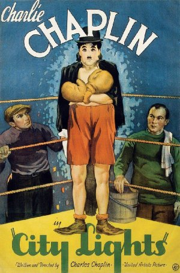
September 14, 2014Directed by Charles Chaplin; Starring Charles Chaplin, Virginia Cherrill, Florence Lee, Harry Myers, Al Ernest Garcia
City Lights

USA, 1931, 87 min, B&W, G, Silent w/intertitles
When Chaplin made this picture, although three years into the era of sound, he must have known that "City Lights" might be his last silent film. Although the film has a full musical score (composed by Chaplin) and sound effects, it has no speech. This film would come the closest to representing all the different levels of his genius. It contains the pathos, the pantomime, the effortless physical coordination, the melodrama, the bawdiness, the grace, and, of course, the Little Tramp, a character to become the most famous image on earth, as he struggles to help a blind flower girl with whom he has fallen in love.
Read Roger Ebert's review of City Lights at Great Movies.- 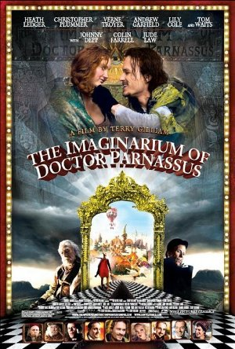
October 12, 2014Directed by Terry Gilliam; Starring Christopher Plummer, Andrew Garfield, Lily Cole, Heath Ledger
The Imaginarium of Doctor Parnassus
UK, 2009, 123 min, Color, PG-13
Dr. Parnassus runs a sort of circus troupe with his daughter Valentina and two other compatriots. Their shtick is the hawking of the Imaginarium which supposedly allows those who enter to live out their dream life. Their scheme is not going well and they have money problems. Parnassus makes a bet with the devil who predicts Parnassus would find a man who would be their savior. Their new teammate is adroit at attracting customers and changes Parnassus' life. This is a wonderful fantasy drawn from pure imagination.
November 9, 2014Directed by Milos Forman; Starring Jan Vostrcil, Josef Sebánek, Josef Valnoha, Frantisek Debelka
The Firemen's Ball (Horí, má panenko)
Czechoslovakia, 1967, 73 min, Color, Not Rated, Czech w/subtitles
This is the story of a single night at a small-town party organized by the local fire brigade to honor their retiring chairman on his eighty-sixth birthday (they missed honoring him on the more meaningful eighty-fifth, in the first of many fumbles by this incompetent assemblage). From the very beginning Forman sets the scene for the idiocy to come. The firemen accuse each other of stealing the prizes from the night's lottery fund, and set fire to the banner that was to hang above the hall during the ball. The fact that they're unable to put out even a small blaze shows their bungling and sets up the film's surprising poignant climax in this deadpan, hilarious satire.
Read Roger Ebert's review of The Firemen's Ball at Great Movies.December 14, 2014Directed by Victor Sjöström; Starring Victor Sjöström, Hilda Borgström, Tore Svennberg, Astrid Holm
The Phantom Carriage (Körkarlen)
Sweden, 1921, 100 min, B&W, Not Rated, Silent w/intertitles
This is a horror film in the sense that it wallows in the misery of despair of not only the protagonist's life (Holm) but also of those whose lives he scuttled on his way down. Holm is subjected to a dark, frigid excursion that gives forlorn faces to his sins. He spends his last moments on earth in a graveyard with his drinking buddies, where he relays a folk tale that insists that the last person to die each year is doomed to drive death's carriage for the next twelve months and become a reaper of souls. He is one of the biggest, most unrepentant bastards you'll ever meet. (Note: Director Sjoström, the father of Swedish cinema, inspired Ingmar Bergman to become a film director.)
- 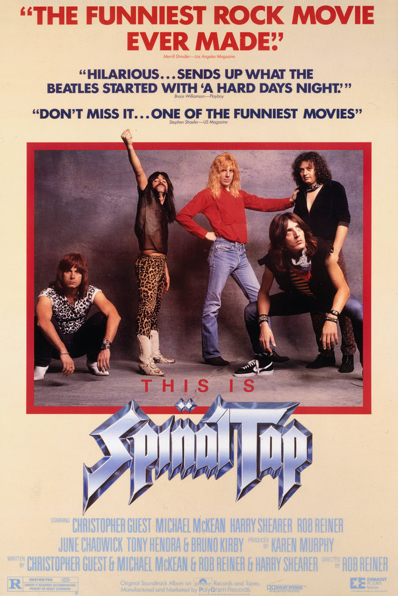
January 11, 2015Directed by Rob Reiner; Starring Rob Reiner, Kimberly Stringer, Chazz Dominguez, Shari Hall
This Is Spinal Tap
USA, 1984, 82 min, Color, R
In his directorial debut, Reiner takes the "rockumentary" platform to a whole different level. The film follows the imaginary British rock band Spinal Tap on their brand new American tour. Though the actors play it straight, the effect is pure, unadulterated hilarity, as they go through one absurd situation after another on the road to obscurity. You might think these actors are faking, but you'll be surprised to see them singing and playing.
Read Roger Ebert's review of This Is Spinal Tap at Great Movies.- 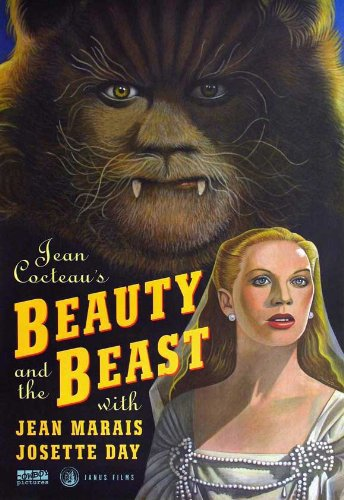
February 8, 2015Directed by Jean Cocteau, René Clément; Starring Jean Marais, Josette Day, Mila Parély, Nane Germon
Beauty and the Beast (La belle et la bête)
France, 1946, 93 min, B&W, Not Rated, French w/subtitles
Disney it ain't, but it is by far the best adaptation of the well-known fairy tale. The movie tells the tale of a girl who wishes for greater things while growing up in a quiet French town. When her father gets off course on his travels to find riches, he wanders into a castle under an enchanted spell and becomes the owner's prisoner. Of course, the loyal daughter offers herself in exchange and ends up under scrutiny since if the Beast can get her to fall in love with him, he can break the spell. The magical castle is crammed full with mysterious living statues and hands holding candelabras and pouring wine. There is little that digital graphics could do to make this film more fanciful. It is far more memorable than anything created by the Disney folks.
Read Roger Ebert's review of Beauty and the Beast at Great Movies.- 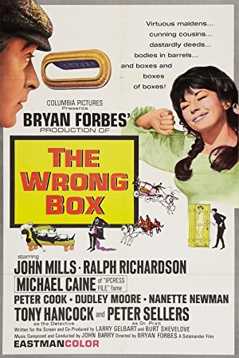
March 8, 2015Directed by Bryan Forbes; Starring John Mills, Michael Caine, Ralph Richardson
The Wrong Box
UK, 1966, 105 min, Color, Not Rated
A tontine, or investment pool, is drawn up on behalf of several young British boys for their benefit. The resultant fortune will go to the last surviving member of the tontine. A series of montages depicts the various demises of the heirs. Finally only two brothers are left and one attempts to kill the other with each attempt failing spectacularly. Also standing to benefit from the tontine are the son and nephews of the brothers who get involved in the crime. The farcical complications fly thick and fast in this wacky gigglefest.
- 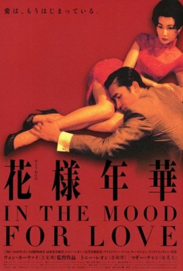
April 12, 2015Directed by Kar-Wai Wong; Starring Maggie Cheung, Tony Chiu-Wai Leung
In the Mood for Love (Fa yeung nin wa)
Hong Kong/China, 2000, 98 min, Color, PG, Cantonese w/subtitles
Hong Kong, 1962. Two people move into rented rooms in adjoining apartments on the same day. The lives of Mrs. Chan and a journalist Mr. Chow are about to cross paths as their respective, and possibly cheating, spouses fade into the background. We literally never see their faces. A rapport develops between this lonely pair, bypassing one another on the stairs and the tight hallways. A certain intimacy becomes almost inevitable. Each is trapped in a deeply unsatisfying marriage. They seem to act upon a naturally evolving attraction. But do they ever consummate their love?
- 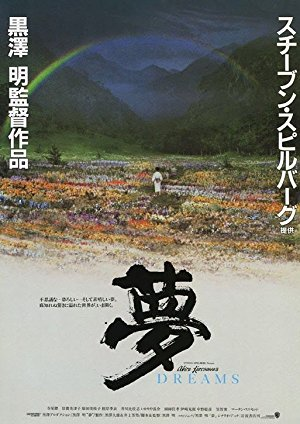
May 10, 2015Directed by Akira Kurosawa, Ishirô Honda; Starring Akira Terao, Mitsuko Baishô, Toshie Negishi, Mieko Harada
Dreams
Japan/USA, 1990, 119 min, Color, PG, Japanese w/subtitles
Akira Kurosawa's Dreams is a most unusual film – it's a collection of eight dream sequences by one of the greatest film visionaries that ever lived. The director claimed that these sequences were actually dreams that he previously experienced over the years. He then turned them into a poetic screenplay that doesn't really run so much as a story as it does as a hauntingly beautiful interweaving of shapes and images. It requires some strong focus to find the macrobiotic structure within the film, but the more you watch, the more you understand...and the more the film speaks to you.
- 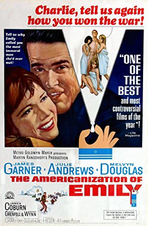
June 14, 2015Directed by Arthur Hiller; Starring James Garner, Julie Andrews, Melvyn Douglas, James Coburn
The Americanization of Emily
USA, 1964, 115 min, B&W, Not Rated
This is essentially an anti-war comedy drama. Commander Charlie Madison, an American officer stationed in England during World War II, has purposely managed to keep himself out of the conflict and behind the scenes in the service of an admiral who believes a naval officer should be the first to land at the D-Day beaches. Charlie sees this as a suicide mission. The film is a mixture of genres, blending and lampooning 1940s romance films through comedy, as well as presenting a harsh critique on the glorification of war and US heroism.
- 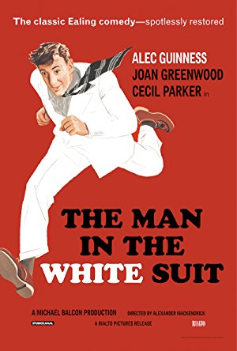
July 12, 2015Directed by Alexander Mackendrick; Starring Alec Guinness, Joan Greenwood, Cecil Parker, Michael Gough
The Man in the White Suit
UK, 1951, 85 min, Color, Not Rated
A fun, farcical comedy with surprising depth. The movie centers on an eccentric man working in a textile mill who has found a formula to create a fabric which never wears out or gets dirty. While that sounds wonderful, on a wider scale it makes you think about businesses trying to stifle progress to protect profits and workers fearing for their jobs. We not only see him running around in a luminous white suit but various people try to prevent him from getting away and revealing his invention. Wonderfully paced and acted, it will keep you smiling from start to finish.
- 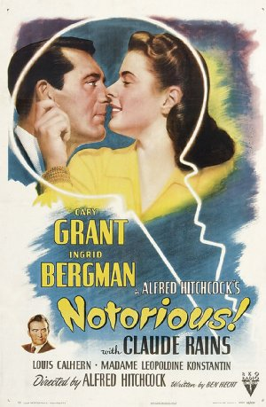
August 9, 2015Directed by Alfred Hitchcock; Starring Cary Grant, Ingrid Bergman, Claude Rains, Louis Calhern
Notorious
USA, 1946, 101 min, B&W, Not Rated
Ingrid Bergman plays Alicia, the daughter of a German-American who betrayed the United States by providing financial aid to Germany during the war. She wants nothing to do with politics and is more interested in socializing and carousing. Cary Grant plays an agent for the US government and has the assignment to recruit Alicia as a spy. Her job will be to win her way into the confidence of German agents who might be attempting to restart the war. This is an excellent film noir piece. The excitement and tension comes exclusively from the dialogue and interaction between the characters.
Read Roger Ebert's review of Notorious at Great Movies. - 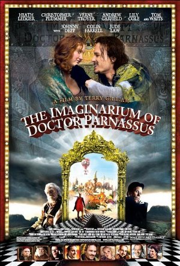